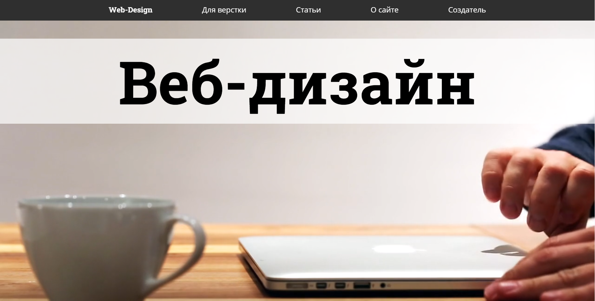
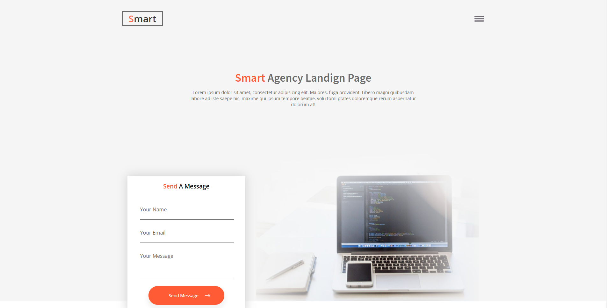
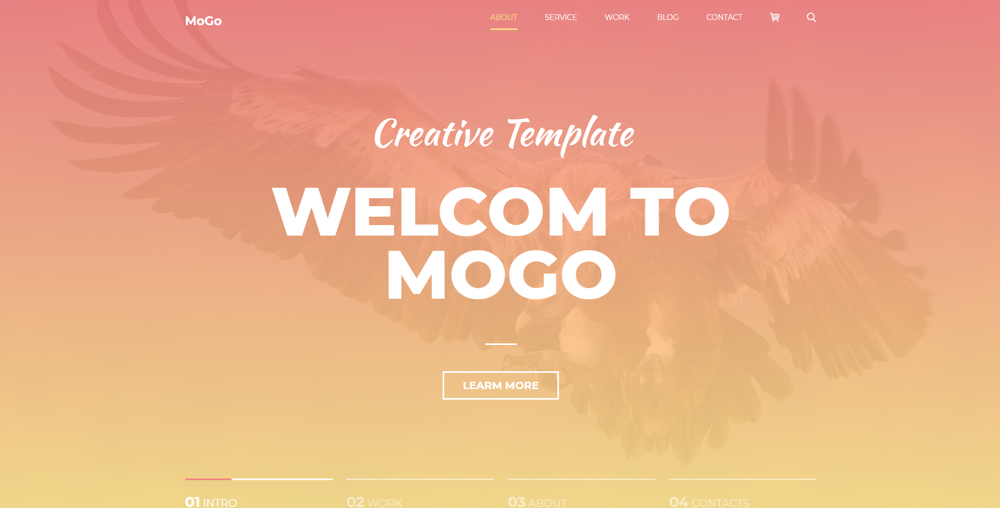
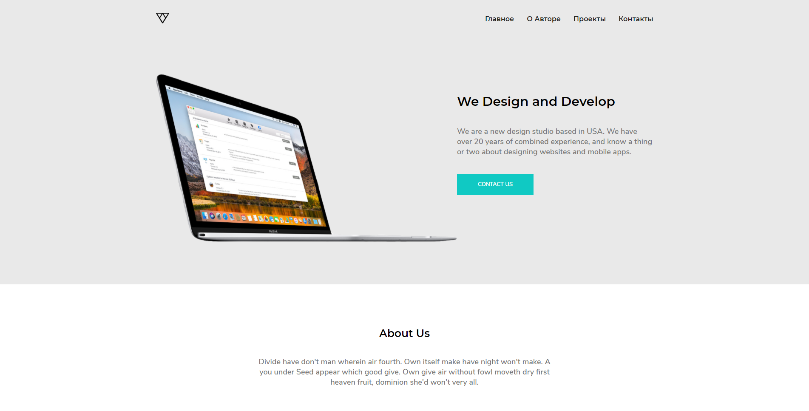

Smart site
Это один из последних моих HTML шаблонов для lending page, тут я использовал SASS, и js библиотеку Swiper для создания слайдеров и всё адаптивно
Посмотреть

MoGo
Это также обычный lending page, сделанный с помощью SASS и не много c JavaScript, но очень сложный и там есть ряд интересных моментов, сделан с PSD макета не адаптивный
Посмотреть


Marsy Blog
Это последний сайт который я сделал на данный момент, по PSD макету, также я его адоптировал для WordPress
Посмотреть